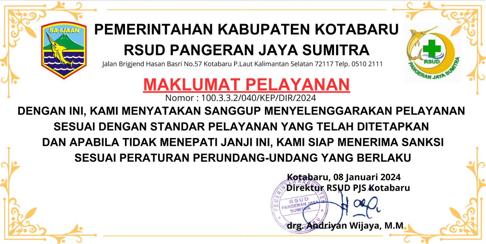

Maklumat Pelayanan

Berita Terkait
Standar Pelayanan
- 1. Standar Pelayanan Gawat Darurat
- 2. Standar Pelayanan Rawat Jalan
- 3. Standar Pelayanan Rawat Inap
- 4. Standar Pelayanan Bedah
- 5. Standar Pelayanan Persalinan dan Perinatologi
- 6. Standar Pelayanan Intensif
- 7. Standar Pelayanan Radiologi
- 8. Standar Pelayanan Laboratorium Patalogi Klinik
- 9. Standar Pelayanan Rehabilitasi Medik
- 10. Standar Pelayanan Farmasi
- 11. Standar Pelayanan Gizi
- 12. Standar Pelayanan Transfusi Darah
- 13. Standar Pelayanan Keluarga Miskin
- 14. Standar Pelayanan Rekam Medis
- 15. Standar Pelayanan Limbah Medis
- 16. Standar Pelayanan Administrasi dan Manajemen
- 17. Standar Pelayanan Ambulans / Kereta Jenazah
- 18. Standar Pelayanan Pemulasaran Jenazah
- 19. Standar Pelayanan Pemeliharaan Sarana Rumah Sakit
- 20. Standar Pelayanan Pengendalian Infeksi